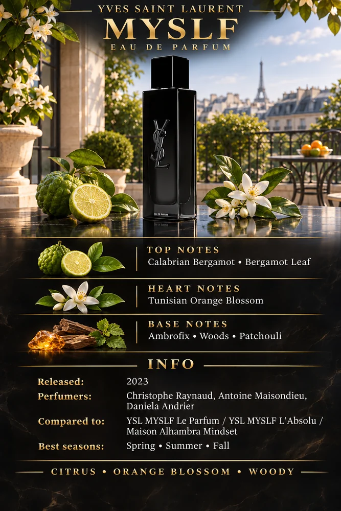

Yves Saint Laurent
MYSLF Eau de Parfum
β Beta Designer · Eau de Parfum · 2023 Future buy
Randy's rating—/10
Public rating9/10
Overall R—/25
Normalized N—
R and N are left blank until Randy has worn and rated it. How scores work
Notes
Top notes
- Calabrian bergamot
- bergamot leaf
Heart notes
- Tunisian orange blossom
Base notes
- Ambrofix
- woods
- patchouli
Details
| House | Yves Saint Laurent |
|---|---|
| Type | Designer · β Beta |
| Concentration | Eau de Parfum |
| Released | 2023 |
| Perfumer | Christophe Raynaud, Daniela Andrier and Antoine Maisondieu |
| Scent family | Woody, Citrus, Floral |
| Best seasons | Spring, Summer, Fall |
| Similar to | YSL MYSLF Le Parfum YSL MYSLF L'Absolu Maison Alhambra Mindset |
Sources
Fragrantica 4.33/5 (about 8.7/10) from 15,273 votes; Parfumo 7.4/10 from 2,186 ratings (longevity 7.0, sillage 6.9). Weighted toward the much larger Fragrantica sample. Vote-weighted and rounded to 9. Checked 2026-11-14.
Other Suggestions
-
 Yves Saint LaurentLa Nuit de L'Homme Eau de ToiletteRandy9Public 9N 0.900
Yves Saint LaurentLa Nuit de L'Homme Eau de ToiletteRandy9Public 9N 0.900 -
 Yves Saint LaurentBabycat Raw Bourbon Eau de ParfumRandy—Public 9N —
Yves Saint LaurentBabycat Raw Bourbon Eau de ParfumRandy—Public 9N — -
 Yves Saint LaurentMYSLF Le ParfumRandy—Public 8N —
Yves Saint LaurentMYSLF Le ParfumRandy—Public 8N — -
 ChanelBleu de Chanel ParfumRandy9.5Public 9N 0.926
ChanelBleu de Chanel ParfumRandy9.5Public 9N 0.926 -
 CreedWild VetiverRandy9.5Public 8N 0.880
CreedWild VetiverRandy9.5Public 8N 0.880